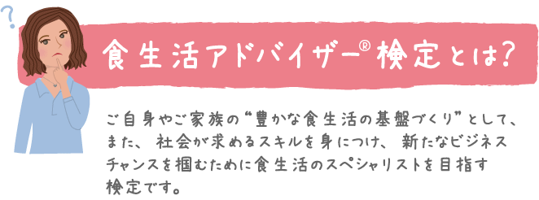
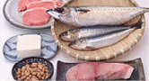

受験の制限はありません。
食生活に興味のある方ならどなたでも受験できます。
- 
- 栄養素の働き、病気と食事の関わり、運動と休養などを学び、心と体の健康づくりをサポート。
- 調理のコツや献立の工夫、行事と料理、テーブルマナーを心得て、暮らしの中の「食」を演出。
- 食品の分類法を把握し、生鮮食品・加工食品の表示、アレルギー表示、栄養表示を読み解く。
- 食中毒予防の決め手となる衛生管理。食生活の安全を守るために、具体的な対策をマスター。
-

- 流通の役割や小売の形態が多様化する中で、商品を正しく選ぶ目を養い、賢い消費者をめざす。
-

- 身近な税金や法律、経済など「食」を取り巻く消費生活と社会のしくみについて理解を深める。

 普段から『食』と『生活』に
普段から『食』と『生活』に